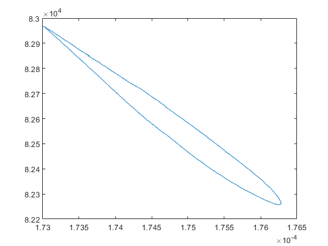

clear,clc,close all
names = ["stirling8deg.csv","stirling10deg.csv","stirling12deg.csv"];
vertDisp = ["smallbottomfacedisp8deg.xlsx","smallbottomfacedisp10deg.xlsx","smallbottomfacedisp12deg.xlsx"];
holeDisp = ["holeangulardisp8deg.xlsx","holeangulardisp10deg.xlsx","holeangulardisp12deg.xlsx"];
for j = 1
[time,pres,TT,TB,BT,BB,opto] = getData(names(j));
index = find(opto == 1,1);
zeros = false;
found = false;
hole1 = 0;
hole2 = 0;
for i = index:numel(opto)
if zeros == false
if opto(i) == 0
zeros = true;
else
hole1 = hole1 + 1;
ind1 = i;
end
else
if opto(i) == 1 && zeros == true
hole2 = hole2 + 1;
ind2 = i;
found = true;
elseif found == true && opto(i) == 0
break
end
end
end
ind1 = ind1 - ceil(hole1/2);
ind2 = ind2 - ceil(hole2/2);
area = 298.65;
vertData = xlsread(vertDisp(j));
holeData = xlsread(holeDisp(j));
dis = vertData(:,3);
dis = dis-min(dis);
disVol = dis*area*1e-9+1.73e-4;
volTime = vertData(:,2);
angle = holeData(:,3);
angle = angle-min(angle);
first = find(angle == 0,1);
second = find(angle(first+1:end) < 8,1);
time = time(ind1:ind2);
pres = pres(ind1:ind2);
volTime = volTime(first:first+second+1);
volTime = volTime-min(volTime);
volInter = interp1(volTime,disVol(first:first+second+1),time-min(time));
figure(1)
plot(circshift(volInter,626),pres)
end
